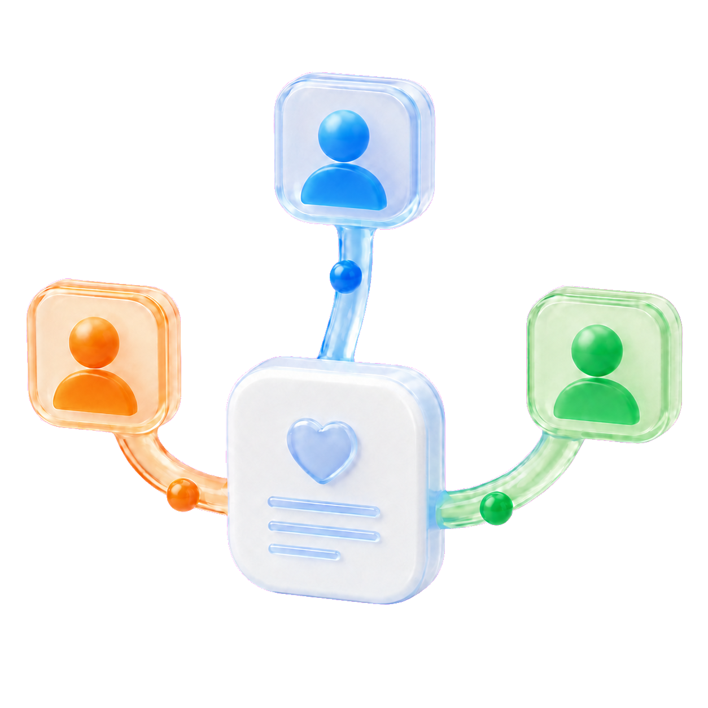
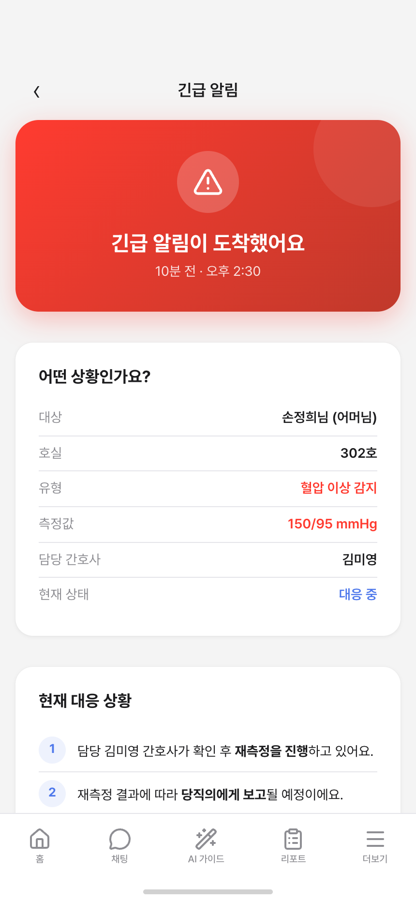
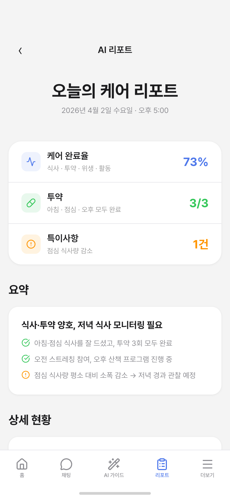
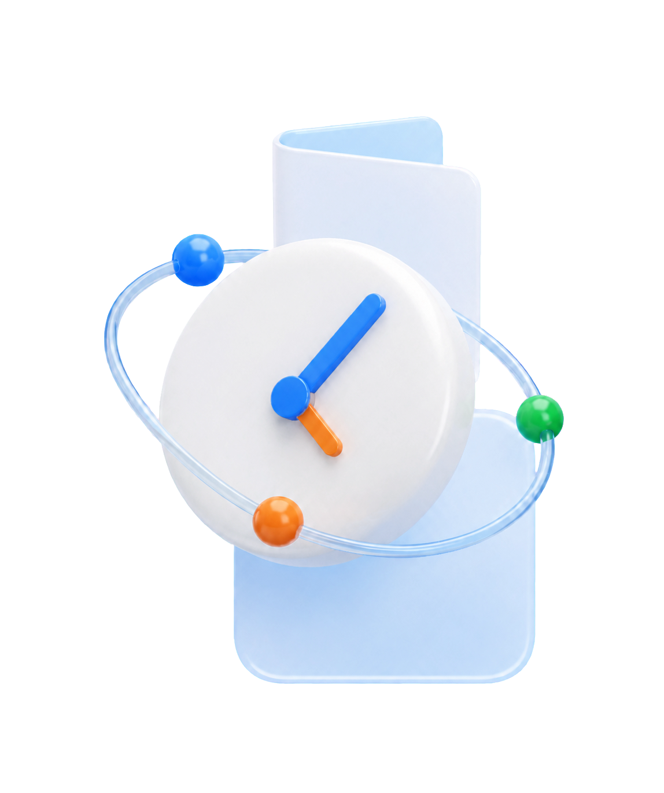
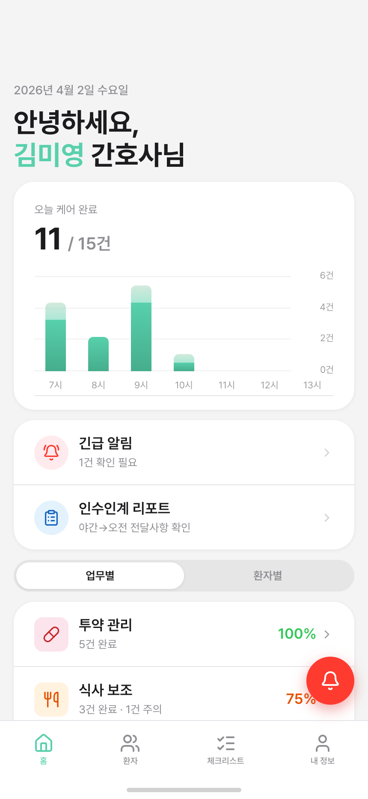
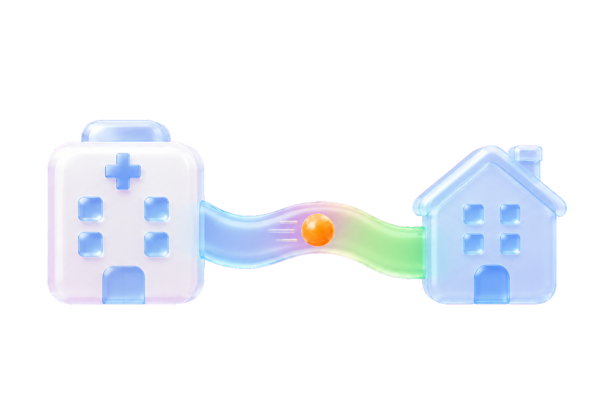

하루안부

User Research
가족은 매일 궁금하지만,
‘물어볼 곳’이 없습니다
‘물어볼 곳’이 없습니다
요양시설에 부모를 모신 가족은 면회와 면회 사이의 공백을 견딘다.
궁금해서 전화하면 현장의 손이 멈추고, 참으면 하루가 통째로 비어 있다.
궁금해서 전화하면 현장의 손이 멈추고, 참으면 하루가 통째로 비어 있다.
User Needs
Solution
면회를 못 가는 날에도
오늘 어땠는지 알고 싶다
오늘 어땠는지 알고 싶다
일일 리포트
하루 한 번, 같은 시간에 도착한다. 오늘의 식사·투약·기분이 한 장으로 정리된다.
매번 전화로 묻기가
현장에 미안하다
현장에 미안하다
묻지 않아도 오는 기록
요양보호사는 평소 업무 흐름에서 체크 한 번만 한다. 응대용 입력을 따로 만들지 않았다.
의료 용어로 된 기록은
읽어도 이해가 안 된다
읽어도 이해가 안 된다
역할별 언어로 번역
같은 기록이 가족에게는 안부로, 의료진에게는 맥락으로, 어르신에게는 큰 글자로 간다.
Service Diagram
보호자
가족
가족
요양
보호사
보호사
의료진
같은 기록
다른 언어
실시간 동기화
현장 기록
어르신의
하루
하루
Service Definition
한 번의 기록이
네 사람에게 도착합니다
네 사람에게 도착합니다
입력하는 사람은 요양보호사 한 명뿐이고, 나머지 셋은 받기만 한다.
기록을 늘리지 않고 도착지를 늘리는 것 — 그것이 이 서비스의 전부다.
기록을 늘리지 않고 도착지를 늘리는 것 — 그것이 이 서비스의 전부다.
How
요양보호사가 업무 중 체크 한 번, AI가
역할별 문장으로 옮겨 네 앱에 동시에 보낸다
역할별 문장으로 옮겨 네 앱에 동시에 보낸다
기록 1건 → 보호자 · 의료진 · 어르신 각자의 화면

Who
시설에 부모를 모신 가족, 요양보호사,
의료진, 그리고 어르신 본인
의료진, 그리고 어르신 본인
독거노인용이 아니라 시설 돌봄의 네 당사자

Why
매일 궁금하지만
물어볼 곳이 없어서
물어볼 곳이 없어서
전화는 현장의 손을 멈추게 한다


When
하루 한 번,
같은 시간에
같은 시간에
알림이 아니라
약속된 도착
약속된 도착


Where
시설 안과 시설 밖을
잇는 자리
잇는 자리
노인의료복지시설
6,139개소 · 24.3만명
6,139개소 · 24.3만명
Project Overview
“오늘 하루도 안녕하셨습니다”
하루안부는 요양보호사가 남긴 기록 한 건을 보호자 · 의료진 · 어르신
각자의 언어로 번역해 도착시키는 시설 돌봄 커뮤니케이션 플랫폼입니다.
Market Context
돌봄은 늘어나는데,
손은 줄어듭니다
손은 줄어듭니다
2043년 요양보호사 최대 99만명 부족, 같은 기간 돌봄 수요는 2023년의 2.4배.
기록을 늘리는 해법은 현장에서 살아남지 못한다. — KDI(2026.4)
기록을 늘리는 해법은 현장에서 살아남지 못한다. — KDI(2026.4)
기기는 이미
손에 있다
손에 있다
65세 이상 스마트폰 보유율
2020년 56.4% → 2023년 76.6%
2020년 56.4% → 2023년 76.6%
76%
20.0%
2024년 12월, 65세 이상 1,024만명 — 초고령사회 진입
행정안전부 주민등록 인구통계 · 2036년 29.9% · 2050년 40.1% (통계청 장래인구추계)